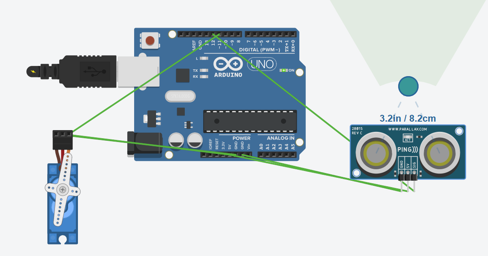

Luua Arduino põhine automaatne tõkkepuusüsteem, mis avaneb läheneva auto korral. Süsteem kasutab kauguse mõõtmiseks 3-kontaktilist ultraheliandurit (ping sensor) ja tõkkepuu liigutamiseks servomootorit. Kui objekt tuvastatakse lähemal kui 15 cm, avaneb tõkkepuu (180 kraadi) kolmeks sekundiks ning seejärel sulgub uuesti (0 kraadi).

#include <Servo.h>
// Pins
const int pingPin = 12; // SIG pin of the 3-pin sensor
const int servoPin = 11; // Servo control pin
// Logic settings
const int distanceThreshold = 15; // Trigger distance in centimeters
const int openAngle = 180; // Open barrier angle
const int closedAngle = 0; // Closed barrier angle
const int delayTime = 3000; // Wait time (3 seconds)
Servo barrierServo;
void setup() {
Serial.begin(9600);
barrierServo.attach(servoPin);
barrierServo.write(closedAngle); // Close the barrier at startup
Serial.println("System with 3-pin sensor is ready.");
}
void loop() {
long duration, distance;
// 1. SET PIN AS OUTPUT (Send signal)
pinMode(pingPin, OUTPUT);
digitalWrite(pingPin, LOW);
delayMicroseconds(2);
digitalWrite(pingPin, HIGH);
delayMicroseconds(5); // 5 microseconds is enough for these sensors
digitalWrite(pingPin, LOW);
// 2. SET THE SAME PIN AS INPUT (Receive signal)
pinMode(pingPin, INPUT);
duration = pulseIn(pingPin, HIGH);
// 3. CALCULATE DISTANCE
// Speed of sound ~340 m/s or 0.034 cm/us. Divide by 2 because sound travels back and forth.
distance = duration * 0.034 / 2;
// Output to serial monitor
Serial.print("Distance: ");
Serial.print(distance);
Serial.println(" cm");
// 4. BARRIER LOGIC
if (distance > 0 && distance <= distanceThreshold) {
Serial.println("Car. Open");
barrierServo.write(openAngle);
delay(delayTime);
} else {
barrierServo.write(closedAngle);
}
delay(100); // Pause before the next measurement
}